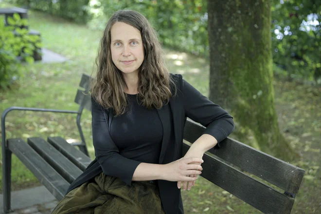

cell biology × data visualization × AI
Alenka
Guček
I started out watching single vesicles fuse with the cell membrane. Now I work on trustworthy AI and data visualization at the Department of Artificial Intelligence, Jožef Stefan Institute, and I am a guest lecturer at Uppsala University.

scroll to explore the map ↓
I · cell biology · 2011–2021
Watching single vesicles fuse
For my PhD at the University of Ljubljana and my postdoc at Uppsala University I recorded single vesicles fusing with the cell membrane. I measured fusion pores in astrocytes and insulin-secreting β-cells with electrophysiology and super-resolution microscopies.
The bright dots are my 40 outputs from those years. The teal cloud is 1,500 cell-biology papers placed by what their abstracts say.
II · data visualization · 2021–
Making data speak
Explaining very specialised results to other people pulled me towards data visualization. I design visual stories for health and rare-disease data, speak and write about effective scientific figures, and lead a PhD course on data visualization for life science at Uppsala University.
III · artificial intelligence · 2021–
Trustworthy AI
At the Department of Artificial Intelligence of the Jožef Stefan Institute I work on trustworthy and unbiased AI for public governance, AI agents that simulate debates on social media, and AI analytics for water and health.
IV · the whole map
Where it all meets
About 4,400 papers from the three fields, with my work among them. Hover over a theme to light up its outputs, or over a dot to see what it is.
V · fifteen years
One dot per output
The same dots, now sorted by year and coloured by the field they sit closest to. Teal gives way to coral and violet.